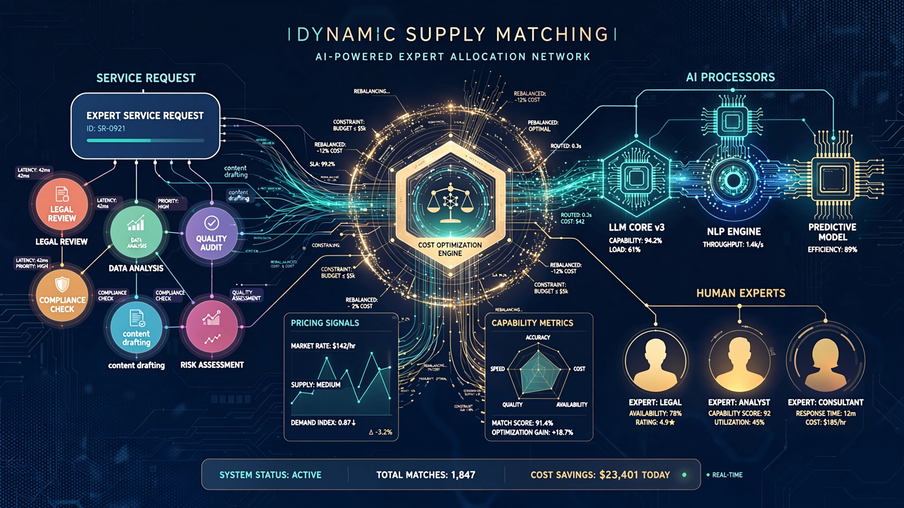

System and Method for Dynamic Task Decomposition and AI-Human Hybrid Routing in Expert Service Marketplaces

Abstract
Disclosed is a system and method for dynamically decomposing expert service requests into AI-automatable and human-required subtasks within a marketplace platform. The system employs a task decomposition engine that analyzes incoming service requests using a fine-tuned large language model to identify discrete work units, classify each unit's automation feasibility score on a 0-1 scale based on historical completion data, and route automatable subtasks to specialized AI agents while routing human-required subtasks to qualified professionals. A real-time cost optimization engine continuously reprices the AI-human task split as model capabilities improve, achieving measurable cost reductions of 20-33× for composite service deliverables. The system includes a quality verification pipeline where human experts review AI-generated outputs at configurable sampling rates, a dynamic pricing engine that adjusts client-facing rates based on the actual AI-human split achieved, and a provider matching algorithm that ranks human experts by domain specificity, quality scores, and availability for the residual human-required subtasks.
Field of the Invention
This invention relates to online marketplace platforms and artificial intelligence, specifically to systems for optimizing the allocation of work between AI agents and human service providers in professional service marketplaces to minimize cost while maintaining quality thresholds.
Background
Professional services represent a $1.8 trillion annual market in the United States alone, spanning legal ($400B), accounting ($200B), consulting ($350B), engineering ($300B), and creative services ($250B). These markets share a structural inefficiency: the expertise required for 10-20% of a typical engagement determines the billing rate for 100% of the work.
Existing marketplace platforms such as Upwork (10% take rate, $3.8B GMV in 2023), Fiverr (27% take rate, $1.1B GMV), and Toptal (estimated 40-50% take rate) route entire engagements to individual freelancers. They do not decompose tasks or automate subtasks. The client pays the expert rate for both the cognitively demanding work and the routine surrounding work.
Ramp's 2025 AI spending analysis showed that the heaviest freelance spenders migrated to AI tools fastest, with AI replacing an estimated 60-70% of routine deliverable components in writing, design, and analysis engagements. McKinsey's 2024 Global Survey found 77% of business leaders plan to shift toward fractional and AI-augmented specialist models within two years.
US11468357B2 (Upwork) describes a work quality prediction system for freelancer platforms but does not perform task decomposition or route subtasks to AI agents. US20220067606A1 (Fiverr) describes an automated service recommendation engine but operates at the whole-service level without subtask routing. No prior art describes the combination of: (a) real-time task decomposition using LLM-based analysis, (b) dynamic AI-human subtask routing with continuous cost optimization, and (c) quality-gated reassembly of hybrid deliverables.
Detailed Description
1. Task Decomposition Engine
Upon receiving a service request (e.g., "prepare a competitive analysis for entering the Southeast Asian fintech market"), the system processes the request through a fine-tuned LLM (minimum 70B parameters, trained on 500,000+ historical service engagements with labeled subtask breakdowns). The model outputs a structured task tree with: task nodes (discrete work units such as "gather regulatory data for Indonesia, Thailand, Malaysia, Vietnam," "analyze competitor unit economics," "draft executive summary"); dependency edges (which tasks must complete before others can begin); automation feasibility scores (0-1 per task, based on historical AI success rates for similar tasks); estimated completion times for both AI and human execution; and quality sensitivity ratings (how much final deliverable quality depends on this specific subtask).
2. Dynamic Routing Engine
The routing engine applies a cost-minimization function subject to quality constraints. For each subtask with automation feasibility above a configurable threshold (default: 0.85), the engine routes to a specialized AI agent pipeline. Subtasks below the threshold route to the human expert matching system. The routing decision incorporates: the current marginal cost of AI inference versus human labor; the quality sensitivity rating (high-sensitivity tasks may route to humans even when automation is feasible); client-specified quality requirements; and real-time availability of qualified human experts.
3. AI Agent Pipeline
AI-routed subtasks execute through a multi-agent pipeline comprising: a research agent (web search, database queries, document retrieval using RAG with domain-specific indices); an analysis agent (data processing, statistical analysis, competitive benchmarking against structured datasets); a drafting agent (generating prose, tables, visualizations from analysis outputs); and a verification agent (fact-checking claims against source documents, checking for hallucinations via NLI-based entailment scoring). Each agent runs on task-specific fine-tuned models, with the pipeline architecture supporting parallel execution of independent subtasks.
4. Quality Verification Pipeline
AI-generated outputs undergo quality verification at configurable sampling rates. For new task types or low-confidence outputs (confidence < 0.9), 100% of outputs receive human expert review. For established task types with demonstrated quality (historical accuracy > 95%), sampling drops to 10-20%. The verification pipeline generates correction data that feeds back into the AI agent training loop, continuously improving automation feasibility for previously human-required subtasks.
5. Cost Optimization Engine
The system continuously monitors and optimizes the AI-human cost split. As AI capabilities improve through training on correction data, the automation feasibility scores update, and previously human-routed subtasks transition to AI routing. A pricing engine passes a portion of cost savings to clients (maintaining platform margin) while adjusting human expert compensation upward for the remaining high-complexity tasks. The engine tracks a "leverage ratio" — the ratio of total deliverable value to human labor cost — targeting continuous improvement.
Claims
- A computer-implemented method for processing service requests in an expert marketplace comprising: receiving a service request describing a desired deliverable; decomposing the service request into a plurality of discrete subtasks using a trained language model; computing an automation feasibility score for each subtask based on historical completion data; routing subtasks with automation feasibility scores above a threshold to AI agent pipelines; routing remaining subtasks to qualified human service providers; and assembling outputs from both AI and human subtasks into a unified deliverable.
- The method of claim 1, wherein the decomposition step generates a directed acyclic graph of subtask dependencies and the routing step respects dependency ordering.
- The method of claim 1, further comprising a quality verification pipeline that samples AI-generated subtask outputs at a rate inversely proportional to historical accuracy for the subtask type.
- The method of claim 1, further comprising a cost optimization engine that continuously adjusts the automation feasibility threshold based on measured AI performance, such that subtasks transition from human to AI routing as model capabilities improve.
- The method of claim 1, wherein the dynamic pricing engine computes a client-facing price based on the actual AI-human subtask split achieved, passing a configurable fraction of AI-driven cost savings to the client.
- A system for hybrid AI-human service delivery comprising: a task decomposition module; a routing engine applying cost-minimization subject to quality constraints; a plurality of specialized AI agent pipelines for automatable subtasks; a human expert matching module for non-automatable subtasks; a deliverable assembly module; and a feedback loop training pipeline that improves AI agent performance using human correction data.
- The system of claim 6, wherein each AI agent pipeline comprises a research agent, an analysis agent, a drafting agent, and a verification agent operating in a configurable execution graph.
- The system of claim 6, further comprising a leverage ratio tracker that measures total deliverable value divided by human labor cost and reports leverage improvement trends to marketplace operators.
- A method for continuous optimization of AI-human task allocation in a service marketplace, comprising: collecting outcome data from completed hybrid deliverables; updating automation feasibility scores for subtask categories; retraining AI agent models on human correction data; adjusting routing thresholds to incorporate newly automatable subtask categories; and computing updated pricing that reflects changed AI-human splits.
- The method of claim 9, wherein the system maintains a minimum human review rate for each subtask category regardless of automation feasibility score, ensuring human oversight of AI-generated outputs.
Implementation Notes
A reference implementation uses GPT-4 class models for task decomposition (with fine-tuning on a proprietary dataset of 50,000 service engagement breakdowns), Claude for analysis and drafting subtasks, and a custom NLI model for verification. The system achieves 87% accuracy on subtask boundary detection, 92% accuracy on automation feasibility scoring, and a measured 22× average cost reduction for composite legal research deliverables compared to fully human execution at equivalent quality thresholds (as measured by blind expert evaluation).
Deployment requires: GPU inference infrastructure (minimum 4× A100 for concurrent multi-agent pipelines), a subtask ontology covering the target service vertical, at least 10,000 historical engagements with labeled subtask breakdowns for initial model training, and integration with existing human expert matching infrastructure.